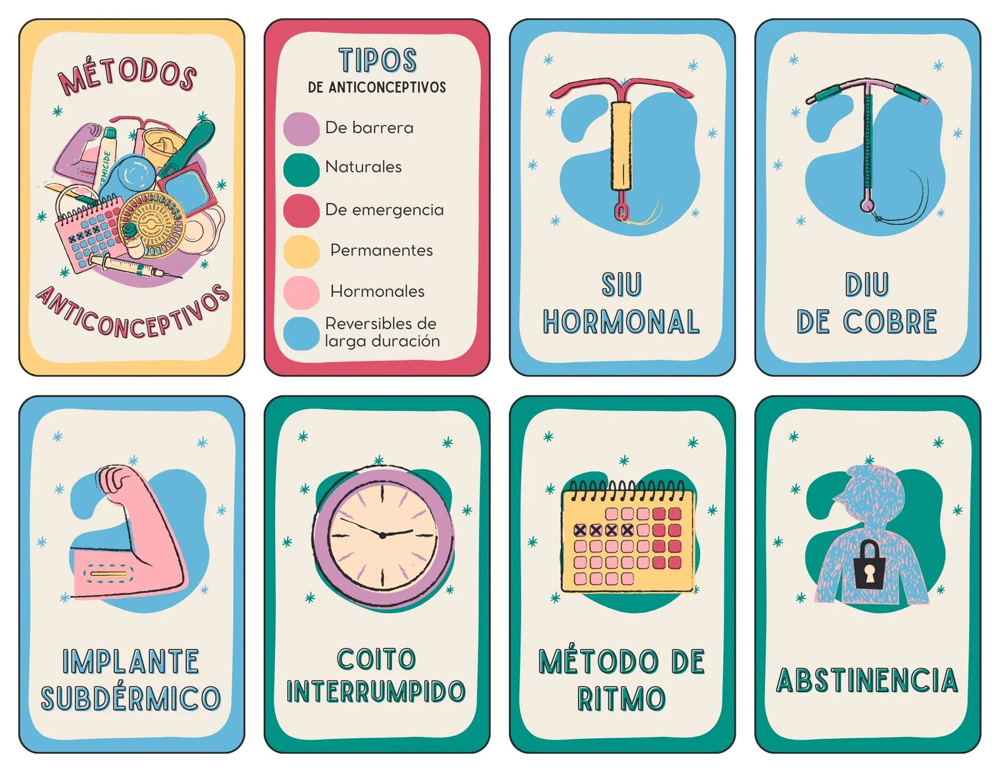
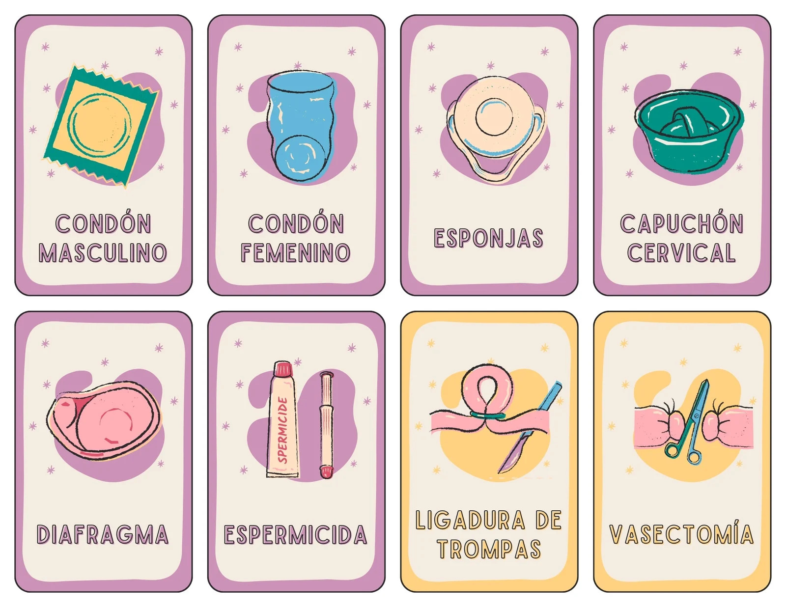

Evitan la ovulación o modifican el entorno del útero: Pastillas anticonceptivas: se toman diariamente. Inyecciones hormonales: se aplican cada 1 o 3 meses. Implante subdérmico: se adhiere a la piel y las actualizaciones cada semana. Parcheanticonceptivo: pequeño cilindro insertado debajo de la piel, efectivo durante 3 a 5 años. Anillo vaginal: se inserta en la vagina y cambia mensualmente.
2.-Métodos de barrera
Bloquean el paso de los espermatozoides: Preservativo femenino: funda que se coloca dentro de la vagina. Diafragma: contenedor elástico que protege el cuello uterino (necesita un ajuste médico).

Cape cervical: similar al diafragma, pero más pequeño.
3.-Métodos intrauterinos (DIU)
Un especialista inserta en el útero: DIU de cobre: carece de hormonas, perdura durante una década. DIU hormonal : libera progestina, dura 3 a 7 años.
4.-Métodos de emergencia
Para usar solo después de las relaciones sin protección:

Píldora del día después: Tómelo inmediatamente (a más tardar 3 días o 48 horas).
5.-Métodos definitivos
Cirugías permanentes: Ligadura de trompas: procedimiento quirúrgico para bloquear las trompas de Falopio.
Masculino
1. Métodos de barrera
Impedir que los espermatozoides lleguen al óvulo: Preservativo masculino (condón)
De látex o poliuretano.
Se coloca en el pene erecto antes de la relación.
Además, protege contra infecciones de transmisión sexual (ITS).
Es el método más accesible y reversible.
🧬 2. Métodos permanentes
Opciones quirúrgicas para hombres que ya no desean tener hijos: Vasectomía
Cirugía que corta o bloquea los conductos deferentes (canales del esperma).
No afecta la función sexual ni la producción de hormonas.
Es permanente, aunque en algunos casos puede ser reversible mediante cirugía compleja.